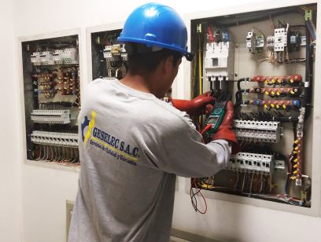
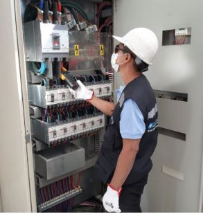
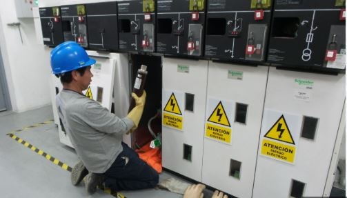

Instalación de Tableros Eléctricos
En Mecatromedical SAC realizamos la instalación y mantenimiento de tableros eléctricos domiciliarios e industriales con personal calificado y bajo normas de seguridad.
Instalamos tableros principales, secundarios, de distribución, automatizados y con protección diferencial, según los requerimientos del sistema. También reordenamos cableado y etiquetado interno para facilitar el mantenimiento y aumentar la seguridad.
Nuestro servicio está orientado a viviendas, talleres, oficinas, laboratorios y plantas industriales. Realizamos pruebas de funcionamiento y entrega técnica completa.


